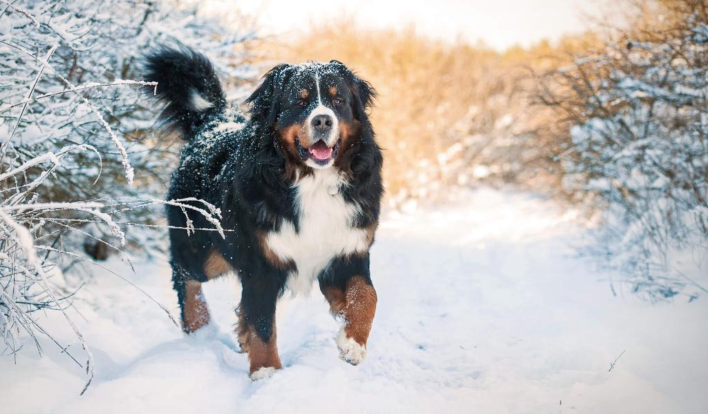

Походження
Спочатку бернський зенненхунд виконував різні доручення на фермах: сторожив стада, відвозив візок з молоком на молочну ферму. У перекладі з німецької назва породи буквально перекладається як "бернський швейцарський пастуший собака". Раніше порода мала назву "дюррбахлер" на честь двору, на якому купували та продавали цих собак.
На рубежі століть порода ледь не припинила своє існування, але зусиллями професора Альберта Хейма, який продовжував удосконалювати породу, схрещуючи її з Ньюфаундлендом, вдалося не тільки зупинити вимирання бенського зенненхунда, але й покращити його темперамент та розміри.
Особистість
Бернський зенненхунд - пильна та добродушна порода. Завдяки своєму трудовому минулому вони люблять освоювати нові трюки. Через їх розміри собак з раннього віку обов'язково варто вчити послуху, і тоді вони стануть чудовими компаньйонами. Їхнє інстинктивне бажання охороняти і працювати на фермі знаходить відображення і сьогодні: бернський зенненхенд чудово стереже будинок і ще краще зганяє стадо і носить тяжкості. Здатність носити тяжкості вони демонструють на популярних серед власників змаганнях з картингу, в яких оцінюється не тільки здатність везти візок, а й уміння ним керувати. Навіть будучи домашнім вихованцем, бернський зенненхунд не відмовиться від фізичної роботи та інших занять. Вони так прагнуть вам догодити!
Здоров'я
ХЭта порода была выведена специально для работы, поэтому она такая сильная и мускулистая. Кобели достигают 70 см в высоту, самки немного ниже. Тем не менее, и те и другие крепко сложены, длина их тела превышает высоту, вес варьируется от 34 до 54 кг.
Грумінг
Через великі розміри бенського зенненхунда необхідно вчити слухняності та гарним манерам ще з щенячого віку. Тим не менш, ця порода повільно дорослішає, як фізично, так і психологічно, тому не варто різко починати дресирування. Ці великі собаки насправді дуже "м'які", тому суворі виправлення не дадуть результатів.
У бернських зенненхундів товста і довга шерсть із природним блиском. Такий прекрасний шерстий покрив вимагає щоденного розчісування, щоб запобігти її звалюванню в грудки. Грумінг рекомендується проводити раз на два тижні. Більшість собак линяє середньо протягом усього року і сильно – двічі на рік. Бернський зенненхунд стане прекрасним членом сім'ї і із задоволенням всюди вас супроводжуватиме. Вони дуже люблять спілкуватися з людьми та будуть щасливі жити з вами у домі. За умови успішної соціалізації бернський зенненхунд терпляче поводитиметься з іншими собаками та дітьми, але, як і з будь-якою породою, це залежить від конкретної особини. З них виходять відмінні сторожові пси, яким потрібне помірне фізичне навантаження. Вони ідеально підійдуть для спільних прогулянок!